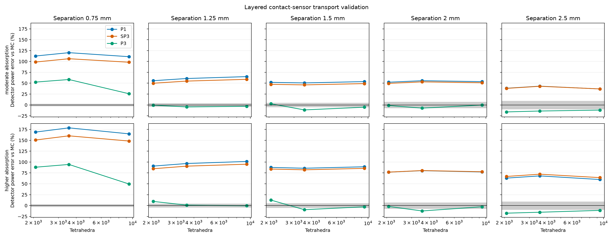
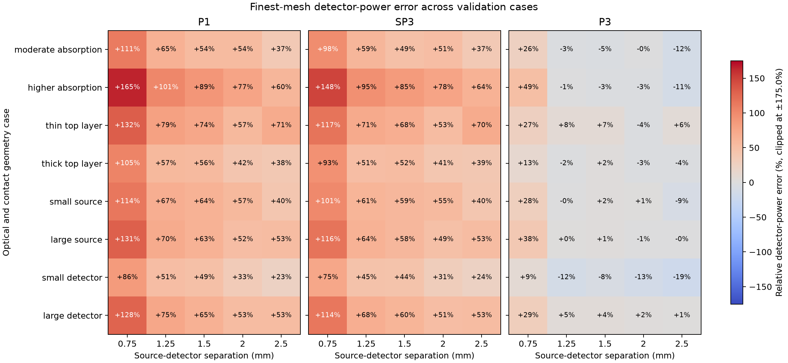

Sensor-focused model validation#
Important
The data on this page use Monte Carlo reference revision 2. This corrects skipped layer interfaces and inconsistent scattering-distance sampling in the original generator. Earlier reference data distributed with versions 0.9.0 and 0.9.1 are superseded; their reported model errors must not be used to judge transport accuracy. The correction is recorded under Unreleased in the repository changelog.
This benchmark compares P1, SP3, and P3 detector-power predictions with an independent Monte Carlo photon-transport reference across eight layered-sample and contact-sensor cases. It varies layer thickness, optical properties, source radius, detector radius, and five source-detector separations. The complete JSON report records all inputs, random seeds, detector powers, Monte Carlo standard errors, mesh sizes, sampled source and aperture areas, and runtimes. The executable gallery example visualizes these published results.
Each case uses 850 nm wavelength, 1 mW diffuse source power, 6 mm sample width,
and a 2 mm total sample thickness. The baseline layer thicknesses are
(0.25, 0.65, 1.10) mm; its source and detector radii are both 0.20 mm.
Cases vary a single geometry factor around that baseline: top-layer thickness
is changed to 0.10 or 0.45 mm, source radius to 0.10 or 0.35 mm, and detector
radius to 0.10 or 0.30 mm. For thickness variants, the bottom layer changes
to keep total sample thickness at 2 mm. A separate higher-absorption case
changes the optical coefficients in all three layers. Separations are 0.75,
1.25, 1.5, 2.0, and 2.5 mm.
The heat map compares finest-mesh detector power to Monte Carlo; colors are clipped for readability. The separate mesh-study plot shows how the baseline and higher-absorption cases change over the three mesh levels. Read both plots with the Monte Carlo uncertainty and area diagnostics in the JSON report.
The full reproducible inputs and reference data are available as
JSON.




Reproduce the benchmark from the repository root with:
.venv/bin/python tools/validate_sensor_models.py
The command writes the JSON report and both plots under
docs/source/_static/images/sensor_validation. It uses one million photon
histories per case and deterministic case-specific seeds. Use --photons
and --seed to choose another run, --cases to select named cases, or
--output-dir to write elsewhere. The committed JSON records each exact
case configuration alongside the full detector-by-detector mesh study and
sampled-area diagnostics.
Reference definition and limits#
The independent reference launches cosine-weighted diffuse photons uniformly over the source disk. It samples Henyey-Greenstein scattering using each layer’s anisotropy and converts reduced scattering to total scattering. It uses continuous absorption weighting and tallies the weighted photons that leave through each circular top-face aperture. All six sample faces transmit without Fresnel reflection, matching the benchmark’s zero-reflectance Robin boundaries. The detector accepts the full outward hemisphere, matching the Lambertian angular acceptance fraction of one used by these MomentRT detectors.
Scattering free paths are sampled with the total scattering coefficient \(\mu_s\), and absorption reduces weight by \(\exp(-\mu_a s)\) on each traveled segment. Paths stop at every layer interface, and the next segment uses that layer’s coefficients. This is the continuous absorption weighting formulation described in the MCCL documentation and by Hayakawa et al. (2014).
The reference is checked against cosine-weighted Beer-Lambert transmission through absorbing layers, exact unscattered transmission with scattering and absorption, and an independent angularly discretized RTE solution for a layered isotropically scattering slab. Further checks cover insertion of identical-material interfaces, known Henyey-Greenstein moments, and accounting for all six exit faces. These checks do not establish accuracy for every anisotropic sensor configuration or replace comparison with another mature Monte Carlo implementation. The JSON includes per-face escape, unscattered power, absorption, and energy-balance uncertainty as additional diagnostics.
These are deliberately matched boundary and detector conventions, not a complete model of an optical instrument. The reference uses independent photon histories and reports their sampling error; it does not include Fresnel reflection, a collimated LED, external optics, or detector responsivity. P1, SP3, and P3 all solve the same finite layered geometry, but their transport approximations can differ from the angularly resolved reference. Mesh refinement cannot remove model-form error. Read the plotted errors together with the Monte Carlo uncertainty and area fractions in the JSON; agreement in energy balance or sampled area alone is not evidence of transport accuracy.
The cases are illustrative and do not span the full range of tissue structures, optical properties, or sensor designs. They are a reproducible diagnostic suite, not a claim of accuracy for skin or every source-detector distance. At the finest mesh, the small-source and small-detector cases sample about 87% of their corresponding geometric footprint areas. Treat those particular results as under-resolved; refine the contact mesh before interpreting their model errors as transport-approximation error.